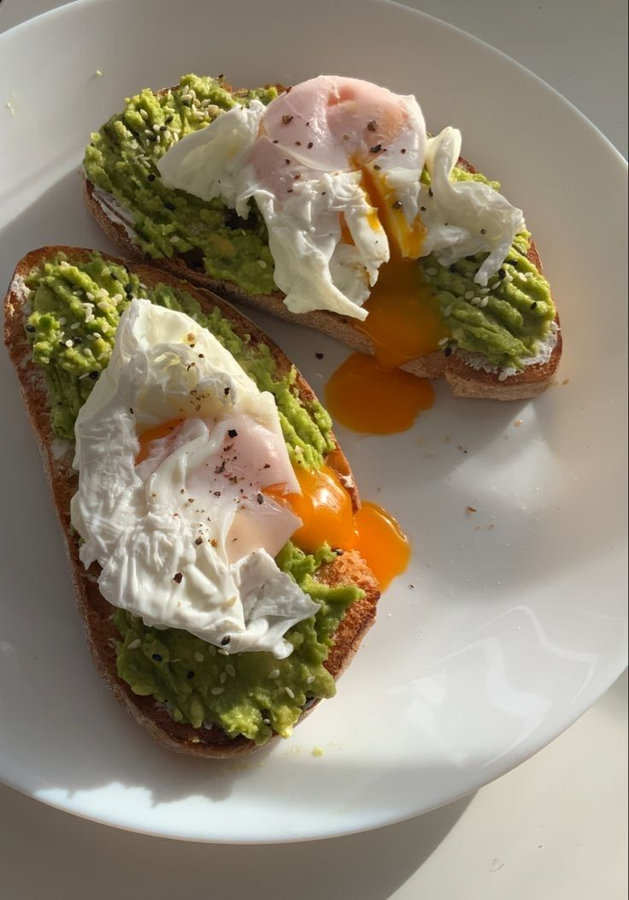

Home
Avocado Toasts

Description
A simple and healthy breakfast or brunch option that's perfect for a quick meal.
Ingredients
- 2 slices of sourdough bread
- 1 ripe avocado
- 2 eggs
- Salt and pepper to taste
- Optional: red pepper flakes, cherry tomatoes, or poached eggs
Instructions
- Toast the sourdough bread slices until they are golden and crispy.
- While the bread is toasting, cut the avocado in half, remove the pit, and scoop the flesh into a bowl. Mash the avocado with a fork until it reaches your desired consistency. Season with salt and pepper to taste.
- Cook the eggs according to your preference (fried, scrambled, or poached).
- Spread the mashed avocado evenly onto each slice of toasted bread.
- Top each slice with a cooked egg.
- Optionally, sprinkle red pepper flakes for some heat or add cherry tomatoes for extra flavor and color.
- Serve immediately and enjoy your delicious avocado toasts!